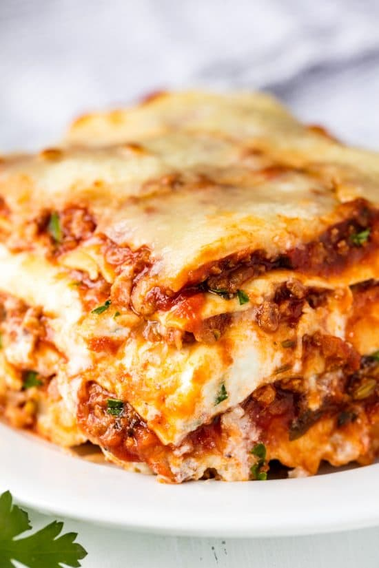

Lasagna

Quick, easy and delicious homemade lasagna
Ingredients
1/2 pound. mozzarella cheese
1/2 pound. shredded cheddar cheese
Instructions
1. Bring a large pot of salted water to boil
2. Add pasta and cook for 8-10 minutes or until al dente
3. Preheat oven to 175 degrees celcius
4. Brown off the brown beef, seasoned with salt and pepper, in a hot pan.
5. Stir in spaghetti sauce and garlic and simmer for 5 minutes
6. Mix types of cheese in a bowl
7. Alternate layers of noodles, meat mixture and cheese mixture until pan is filled.
8. Bake for 30 minutes in preheated oven or until cheese is melted and bubbly